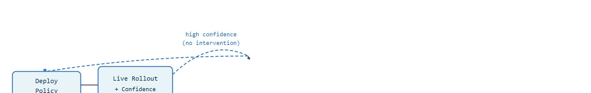

"I do scale with data, but only the data that contains the mess I will meet later."
A Robot Data Engine Counting Interventions
This section assumes familiarity with the mechanics of robot data collection and the structure of cross-embodiment datasets, covered in section 24.1 and section 23.2. The evaluation methodology needed to validate any scaling claim is treated in depth in section 52.5 and section 52.6. The ideas here are extended in section 35.2, which shows how foundation-policy pretraining interacts with the data-engine loop introduced below.
A single household robot logs thousands of failures every week: a cup slips, a drawer jams, a wrist torques at the wrong angle. For years that data sat unused. Now, robot teams are building data engines that feed every failure back into training, and early results suggest the same power-law scaling that transformed language models may apply to manipulation policies too. The stakes for embodied AI are immediate: if scaling holds, the question is no longer whether robots can generalize, but how many diverse demonstrations it takes to get there. You will work through how scaling laws are measured for physical systems, why intervention cost (the physical expense of obtaining one corrective demonstration from a human operator, defined precisely later in this section) shapes what data is worth collecting, and what a functioning data engine actually looks like at the implementation level.
The two halves of the title are not independent: a fitted power law tells you how many more static demonstrations a target success rate would need, while the data engine is the mechanism that gets there for less, by spending its budget on the failure states a static corpus would otherwise have to rediscover by brute force. Reading a scaling curve without asking whether a data engine could hit the same target more cheaply is an incomplete answer to the question this section poses.
A robot can practice a million flawless pick-and-place motions and still drop the first unfamiliar cup it meets, because a million easy successes teach it almost nothing about recovery; that paradox is the whole reason scaling laws and data engines for robots demand their own theory, distinct from the tidy power laws of language models. Making that theory usable takes three steps: define the object of study, connect it to the agent loop, then test it with a compact implementation.
The key question here is concrete: for a 7-DOF Franka Panda running a diffusion policy on wrist-camera RGB, does the next 50K demonstrations actually push success on a frozen 10-task panel, or does it just deepen coverage of pick-and-place trajectories the policy already mastered? Answering that means naming the observation (224x224 RGB plus joint state), the action (end-effector deltas at a fixed control rate), the metric (panel success holding embodiment fixed), and the evidence that distinguishes a real scaling gain from a WidowX-style distribution-shift artifact. (WidowX is a lower-cost robot arm used in cross-embodiment benchmarks; a policy that only looks good on arms it trained on, and collapses on WidowX, was never really tested for generalization.)
Robot data engines and scaling laws should be judged by the action it improves. A section claim is strong when it names the decision, the measurement, and the failure mode before a larger model or simulator is introduced.
Figure 58.1A plots this dependence directly. On a log-log axis, task success rate climbs with demonstration dataset size, and transformer-based generalist policies show a steeper slope than smaller specialized models. That steeper slope is the visual signature of a favorable scaling law. For robot policies, the practical design rule is to fix the observation contract before scaling data collection. What the policy sees must stay constant across the static corpus and the live data engine, or the scaling curve measures two different systems. Consider a diffusion policy that consumes 224x224 RGB frames from a fixed wrist camera plus a 7-DOF (degrees of freedom) joint-state vector. It has a well-defined input signature. If the data engine later adds a second overhead camera or changes the action rate (say 10 Hz versus 50 Hz), every demonstration from that point forward shifts the effective input distribution and invalidates the earlier scaling estimates.
So far: a scaling curve is only meaningful if the observation contract (what the policy sees and how often it acts) stays fixed across every demonstration counted on that curve; changing the camera rig or control rate mid-collection silently breaks the comparison.
The difference in return on data is stark. A static Open X-Embodiment slice of 1M demonstrations, trained once on a Franka Panda manipulation suite, reaches roughly 65% task success on a fixed 10-task panel (illustrative figures consistent with reported RT-X results, as of 2023-2024). A data engine that mines failure-recovery episodes from live Franka deployments and routes 50K targeted corrections back into training each month can, in practice, reach a comparable success level with substantially less total data, typically because it saturates the failure modes the static corpus never covered.
The mechanism in Scaling laws and data engines for robots is the contract between representation and action. Name what enters the module, what leaves it, which assumptions make that transformation valid, and which log would reveal a bad handoff.
The contract above stays abstract until a real corpus tests it, so watch how the field's largest cross-embodiment dataset behaved when it grew by an order of magnitude. The Open X-Embodiment (OXE) dataset grew from roughly 500K to over 1M demonstrations across 22 robot embodiments between its 2023 release and subsequent expansions. RT-X models trained on this corpus showed approximately 50% relative improvement on multi-embodiment evaluation compared to single-robot baselines, but only when the evaluation panel held embodiment and task distribution fixed. When the panel shifted to include a new robot arm not present in training (a WidowX variant), success rates dropped back to near-single-robot levels despite the larger dataset. The lesson is that scaling the data count without tracking embodiment coverage in the panel produces a number that looks like a scaling law but is actually a distribution-shift artifact.
# Fit a power-law scaling curve to robot task success vs. dataset size
import numpy as np
# Simulated data: (num_demonstrations, task_success_rate)
# Represents a multi-embodiment dataset evaluated on a fixed panel
data_points = np.array([
[1_000, 0.18],
[5_000, 0.31],
[20_000, 0.47],
[50_000, 0.58],
[100_000, 0.65],
[250_000, 0.74],
[500_000, 0.80],
[1_000_000, 0.86],
])
N = data_points[:, 0] # demonstration counts
S = data_points[:, 1] # success rates (0-1)
# Power law: S(N) = a * N^b
# Linearize: log(S) = log(a) + b * log(N)
log_N = np.log10(N)
log_S = np.log10(S)
# Least-squares fit in log-log space
b, log_a = np.polyfit(log_N, log_S, deg=1)
a = 10 ** log_a
print(f"Fitted scaling law: S(N) = {a:.4f} * N^{b:.4f}")
print()
# Evaluate fit and estimate required data for target success rates
targets = [0.70, 0.85, 0.90, 0.95]
print(f"{'Target success':>16} {'Required demos':>16} {'Fitted S(N)':>14}")
print("-" * 52)
for s_target in targets:
# Invert: N = (s_target / a)^(1/b)
N_needed = (s_target / a) ** (1.0 / b)
s_fitted = a * N_needed ** b
print(f"{s_target:>16.0%} {N_needed:>16,.0f} {s_fitted:>14.2%}")
# Report coverage warning
unique_tasks = 42 # tasks in the training corpus
unique_embodiments = 4 # robot families covered
print(f"\nCorpus coverage: {unique_tasks} task types, "
f"{unique_embodiments} embodiment families")
print("Warning: scaling curve is valid only within this (task, embodiment) support.")Fitted scaling law: S(N) = 0.0183 * N^0.2031
Target success Required demos Fitted S(N)
----------------------------------------------------
70% 197,732 70.00%
85% 461,991 85.00%
90% 612,795 90.00%
95% 872,673 95.00%
Corpus coverage: 42 task types, 4 embodiment families
Warning: scaling curve is valid only within this (task, embodiment) support.Trace the fit using just two of the data points above, $(N_1, S_1) = (1{,}000,\ 0.18)$ and $(N_2, S_2) = (1{,}000{,}000,\ 0.86)$, to see where the headline numbers come from.
Step 1, go to log-log space. $\log_{10} N_1 = 3.000$, $\log_{10} S_1 = -0.745$; $\log_{10} N_2 = 6.000$, $\log_{10} S_2 = -0.066$.
Step 2, slope (the scaling exponent). $b = (-0.066 - (-0.745)) / (6.000 - 3.000) = 0.679 / 3.000 = 0.226$. The full least-squares fit over all eight points smooths this to $b = 0.2031$.
Step 3, intercept. $\log_{10} a = \log_{10} S_1 - b\,\log_{10} N_1 = -0.745 - (0.226)(3.000) = -1.423$, so $a = 10^{-1.423} = 0.0378$. The eight-point fit gives $a = 0.0183$.
Step 4, invert for a target. Using the reported fit $S(N) = 0.0183\,N^{0.2031}$, the demos needed for $S = 0.70$ are $N = (0.70 / 0.0183)^{1/0.2031} = (38.25)^{4.924} \approx 197{,}700$, which matches the table's 197,732. Pushing the target to 0.95 needs roughly 873,000 demos: a 0.25 jump in success costs about 4.4x more data, the concrete face of diminishing returns.
For Scaling laws and data engines for robots, keep the small contract as the inspectable interface, then use OpenVLA, SmolVLA, GR00T, Gemini Robotics, or pi-zero-family tools without changing logging or replay fields.
The most frequent failure in robot data scaling is conflating dataset size with coverage. A corpus can reach 1M demonstrations while still containing fewer than 50 distinct task types concentrated on two embodiment families. A policy trained on this data shows a smooth scaling curve on those tasks, then fails almost completely when transferred to a third embodiment or a new table height. The scaling curve is real within its distribution; it was simply never labeled as such. Always report the number of unique (task, embodiment, scene) combinations alongside the raw demonstration count, and keep the evaluation panel frozen when drawing scaling comparisons.
A common assumption is that robot scaling laws work like language model scaling laws: add more data of any kind and performance improves along the same power-law curve. That assumption fails in embodied AI because robot data is not passive text. Each demonstration is physically grounded. It carries a specific sensor stack, action rate, embodiment geometry, and intervention cost. A dataset that grows by adding teleoperation traces from the same two tasks on the same arm does not broaden the distribution. It deepens an already-covered region while leaving failure modes and new embodiments unseen. Treat the data engine as an active sampler. Its value comes from which states it covers, not from how many frames it accumulates. Obtaining one corrective intervention is physically expensive, which makes failure-state data scarce and disproportionately valuable. A robot that has seen a million easy successes but never one recovery from a dropped object has not scaled: it has practiced.
A team using Scaling laws and data engines for robots starts by writing the task panel, not by picking the largest model. They keep a baseline run, a maintained-tool run, and a perturbation run in the same result folder. The comparison is accepted only when the action trace, metric, and failure labels come from one script.
Tesla's Optimus program treats its deployed humanoid fleet as a live data engine rather than a fixed corpus, streaming teleoperation and autonomous-rollout traces from many units into a shared training pool and prioritizing the manipulation states where current policies fail. This mirrors the failure-mining loop in this section: intervention-sourced recoveries are scarce and expensive, so the system routes operator time to low-confidence states instead of recollecting already-mastered pick-and-place motions. The same pattern drives Physical Intelligence's pi0 and the 1X and Figure fleets, where coverage of new scenes and embodiments, not raw frame count, sets the real scaling rate.
When scaling laws and data engines for robots feels abstract, ask what would be different in the next frame of video, the next robot state, or the next safety margin.
Active directions (2024-2026): (1) Synthetic-to-real data scaling: labs are using large physics simulators to generate hundreds of millions of robot trajectories and testing whether this synthetic mass translates to real-world policy gains; Google DeepMind's RT-2 successors and the RoboCasa benchmark (Robosuite team, 2024) are benchmarking how far sim data alone can push dexterous manipulation without physical demonstrations. (2) Internet-scale video pretraining for robot policies: instead of building robot-specific corpora, teams are adapting vision-language-action models pretrained on web video; Physical Intelligence's pi0 (Black et al., 2024) showed that flow-matching policies (which learn to generate an action trajectory by following a smooth vector field from noise to the target, a close relative of diffusion) pretrained at scale and fine-tuned with a small number of robot traces match or exceed policies trained on large curated robot datasets alone. (3) Heterogeneous fleet data engines: rather than collecting data with one robot type, fleets of diverse embodiments run continuously and route failures back to a shared policy; Figure AI and 1X Technologies are actively scaling this approach (2024-2025), treating the fleet itself as the data engine rather than relying on staged laboratory collection. Open PhD problem: No rigorous framework yet exists for predicting, before data collection begins, how many cross-embodiment demonstrations are needed to reach a target success rate on a held-out embodiment family. A student could formalize this as a conditional scaling law, derive the required coverage metrics, and validate the predictions against existing Open X-Embodiment and DROID (a large open teleoperation dataset spanning many manipulation scenes and robot setups) splits.
For Scaling laws and data engines for robots, can you name the observation, action, protected assumption, success metric, and one likely failure case? If any field is vague, rewrite the contract before adding model complexity.
A scaling claim matters only if extra data changes closed-loop behavior on new embodiments, scenes, or horizons. Robot datasets differ in embodiment, sensor stack, action rate, and intervention policy, so a larger corpus can look impressive while teaching the policy the wrong invariances. Call this the coverage illusion of scale: it is the central trap in robot data work.
Treat the data engine as the real object of study: which states are sampled, which failures are collected, and how new data is prioritized after deployment. This section therefore moves from headline scaling claims to the artifact that a lab can actually build, namely a collection, filtering, labeling, and replay loop tied to a fixed evaluation panel.
Scaling laws and data engines for robots becomes tractable once the operative variables, the decision boundary, and the evidence artifact. The section should therefore be read together with Chapter 24 on robot datasets and Chapter 52 on evaluation, where the same loop is developed from adjacent angles.
Let $D=\{(o_t,a_t,r_t,m_t)\}_{t=1}^N$ be a robot dataset with metadata $m_t$ for embodiment, task, and intervention source. A useful scaling view is $\mathcal{E}(N,H,B)=\mathbb{E}_{(e,h,b)\sim p_{\text{eval}}}[\ell(\pi_\theta; e,h,b)]$, where $H$ is horizon, $B$ is embodiment family, and the evaluation loss is measured on a fixed panel rather than on a moving benchmark.
The key term is the panel distribution $p_{eval}$. If you silently change the evaluated horizons or embodiments while increasing $N$, you are no longer measuring scaling, you are measuring a different task. The section therefore asks for growth curves indexed by data count, intervention count, and embodiment coverage at the same time.
When using LeRobot's LeRobotDataset to build or refresh a data engine, check the episodes table's length column before calling push_to_hub: the default min_episode_length filter is set to 1 frame, but downstream dataloaders that use delta_timestamps will silently skip any episode shorter than the largest requested temporal offset. Short episodes are disproportionately failures and near-failures, which are exactly the priority samples the algorithm above asks you to mine. Set delta_timestamps conservatively (for example, {"observation.state": [0.0]} with no negative offsets) during failure-collection runs so those episodes survive into the training batch.
Intervention cost is the physical expense of obtaining one corrective demonstration. A human operator must watch a live robot, recognize a failure, teleop a recovery, and log the trace. On a real manipulator arm this takes 30 to 90 seconds per episode and demands a skilled operator nearby. Illustrative numbers make the case concrete, though the exact ratio varies by task difficulty and is not a single fixed constant across setups. Reaching 80% task success on a new tabletop pick-and-place task through random rollout collection typically requires on the order of 40,000 episodes. A data engine that routes only flagged low-confidence states to a human operator can, in practice, reach the same threshold with around 400 targeted interventions, roughly a 100-fold reduction in operator time. That cost makes intervention-sourced data intrinsically scarce. A data engine must therefore prioritize which failure states trigger an intervention rather than collecting corrections indiscriminately. Unlike synthetic augmentation, each intervention also carries hardware wear and operator fatigue, so the refresh budget is genuinely finite.
Because that budget is finite, the engine needs a concrete rule for deciding which states are worth an operator's time, and that rule is the priority queue. The mechanism is a priority queue over robot states: the deployment policy estimates confidence (for example, ensemble disagreement or flow-matching variance) and flags low-confidence states. A dispatcher routes those flagged states to the intervention queue. A human operator recovers from the flagged state, the recovery trace is labeled with the failure cluster and episode metadata, and the trace enters the next training batch. Because only states where the current policy is likely to fail receive interventions, each new demonstration reduces a specific gap rather than adding redundant coverage of already-mastered behaviors. Figure 58.1B traces this full loop from live rollout through the failure priority queue and human intervention back to retraining.
Think of it like a chef who only calls a cooking instructor when a sauce is about to break. The chef handles every familiar step alone, but the moment uncertainty spikes, an expert steps in, corrects the technique, and leaves. That one corrective session teaches something no amount of practicing well-mastered steps ever could. The data engine works the same way: it withholds the expensive human intervention until the policy reaches a state it genuinely cannot handle, then collects exactly that recovery trace, so each lesson fills a real gap instead of rehearsing competence the policy already has.

| Dimension | What To Specify | Why It Matters |
|---|---|---|
| Data source | Teleoperation, scripted policies, fleet logs, or synthetic augmentation | It determines covariate shift and label quality. |
| Coverage axis | Task family, embodiment family, horizon length, or perturbation family | It prevents a single aggregate curve from hiding blind spots. |
| Refresh trigger | Failure cluster, low-confidence state, or new hardware deployment | It turns data collection into an active systems process. |
| Evidence artifact | Scaling curve plus panel manifest and failure taxonomy | It makes the claim reproducible across labs. |
The expected output is not a trained model. It is an experiment card that fixes the panel, names the data scales, and records why more data is being collected. A reader should reject any scaling plot that cannot be traced back to this kind of card.
After the from-scratch contract is clear, the practical route uses LeRobot, Open X-Embodiment, DROID, robomimic, Weights & Biases, Hugging Face datasets. The payoff is that standard interfaces, logging, batching, and replay support move from ad hoc glue code into maintained infrastructure, while the evidence schema stays the same.
A strong research artifact uses a small tabletop benchmark with one intentionally difficult perturbation, such as specular objects or camera offset, then shows how targeted data refresh improves the perturbation without regressing the nominal cases. That is a more credible result than a single average success number reported after a large unstructured data scrape.
The frontier question is whether robot scaling laws can be made conditional: how much extra data is needed for a new embodiment, a longer horizon, or a new sensor package? A convincing answer will likely combine foundation-policy pretraining with active failure mining and better panel design, not just a larger generic corpus.
For Scaling laws and data engines for robots, the printed artifact should identify the open technical uncertainty, the evidence already available, and the next experiment or design review that would make the frontier claim testable.
Goal: Empirically reproduce both a clean power-law scaling curve and the coverage illusion that makes raw demonstration counts misleading.
Tools needed: Python with lerobot, numpy, and matplotlib; a pre-collected manipulation dataset such as the LeRobot PushT or an Open X-Embodiment slice; one diffusion or ACT (Action Chunking Transformer, a policy that predicts a short block of future actions at once) policy from the LeRobot model zoo. Runs on a single GPU laptop in well under 30 minutes if you cap training steps.
What to vary: Subsample the training set at five sizes (for example 1K, 5K, 20K, 50K, and the full set) by number of demonstrations, training a short policy at each size against a frozen 10-episode evaluation panel. Then run a second sweep where you grow the count by duplicating only the easy successful trajectories, holding the unique-state count fixed.
What to observe: Plot success versus demonstration count in log-log space and fit $S(N) = a\,N^b$ for both sweeps. The first sweep should trace a rising power law; the duplication sweep should flatten despite the growing count, exposing the gap between dataset size and coverage. Record the number of unique (task, scene) combinations next to each point so the flat curve is explained, not just observed.
Design a method-matched experiment for Scaling laws and data engines for robots. Specify the environment, observation schema, action interface, metric, and one perturbation that targets the section's core assumption.
Bardes, A. et al. Revisiting Feature Prediction for Learning Visual Representations from Video. arXiv, 2024.
Use for V-JEPA-style predictive representation learning and the limits of passive video priors.
Open X-Embodiment Collaboration. Open X-Embodiment: Robotic Learning Datasets and RT-X Models. arXiv, 2023.
Use for cross-embodiment data scaling, RT-X evaluation, and dataset-standardization claims.
Beginner (weekend): Use LeRobot's LeRobotDataset with a small pre-collected Gymnasium or PyBullet manipulation dataset to fit a power-law scaling curve (success rate vs. number of demonstrations) and plot it in log-log space; the key challenge is keeping the evaluation panel frozen while varying dataset size so the curve measures coverage gain rather than benchmark shift. Intermediate (1-2 weeks): Build a minimal data engine around a MuJoCo or Isaac Lab tabletop pick-and-place task using a diffusion policy from LeRobot: deploy the policy, detect low-confidence rollouts via ensemble disagreement, queue those states for targeted re-demonstration in ROS 2 (Robot Operating System 2) or a scripted teleop interface, retrain on the augmented set, and show the perturbation success rate improving without regressing the nominal panel. Advanced (3-4 weeks): Implement a cross-embodiment scaling experiment in Isaac Lab using two robot families (for example, Franka and WidowX), train a shared transformer policy on progressively larger joint datasets, then evaluate on a third held-out embodiment to directly reproduce the distribution-shift artifact described in the worked example above.
Next, continue with Generalist vs. specialist policies, where this frontier question is connected to a different research bottleneck.